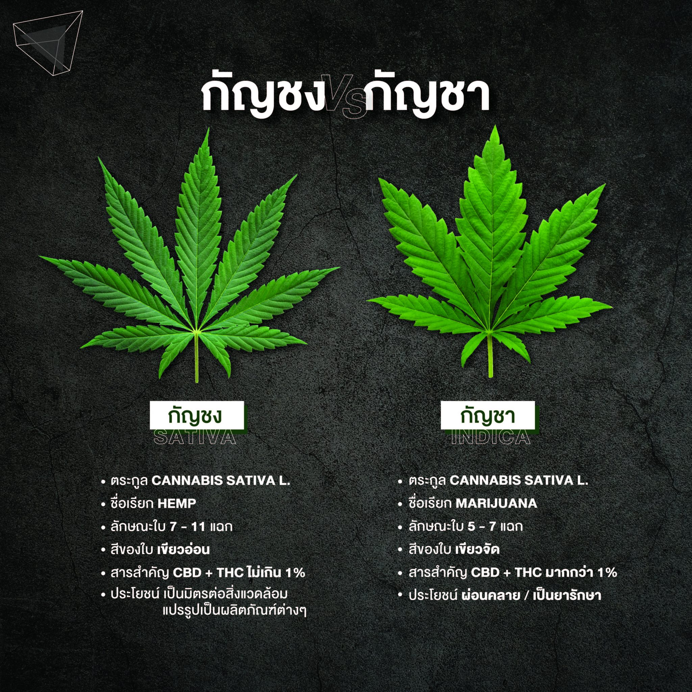
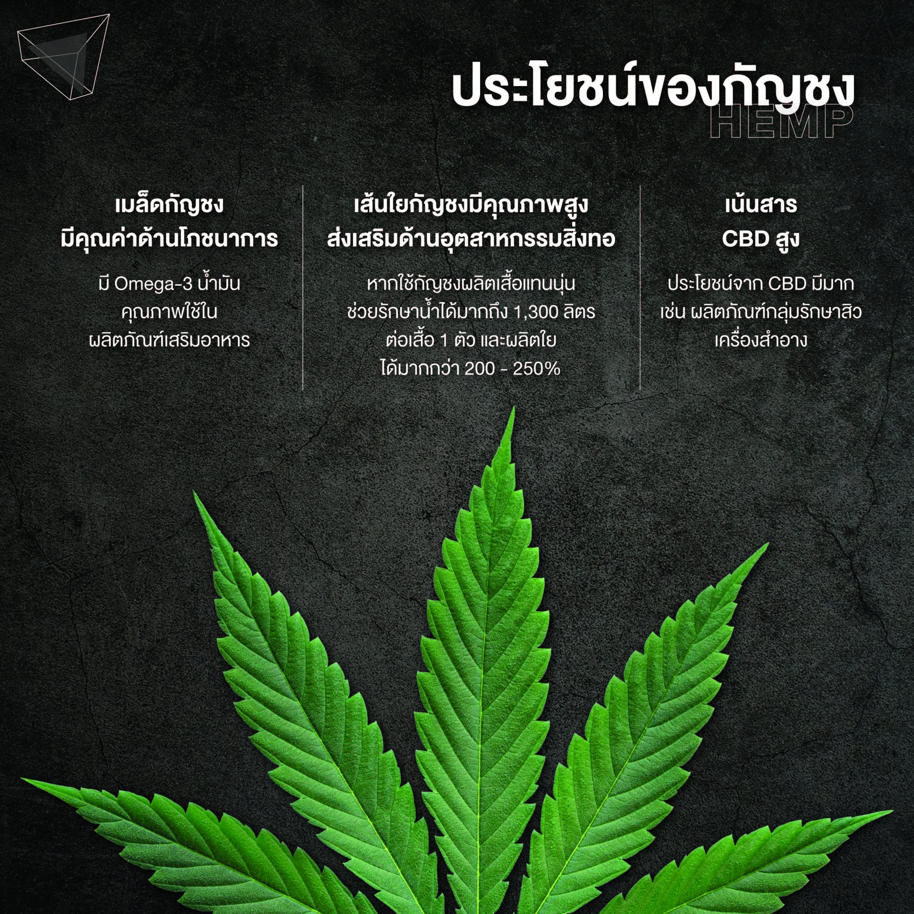
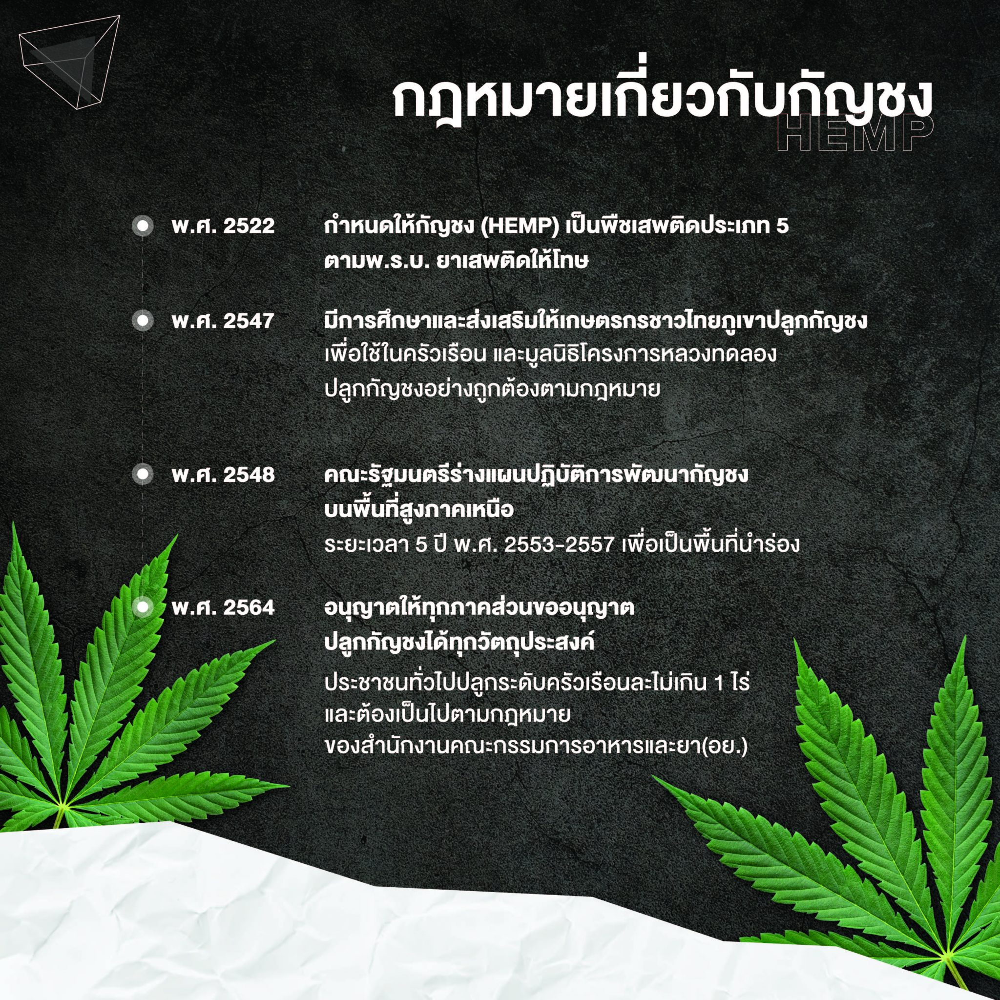

กัญชง (HEMP) คือ พืชชนิดหนึ่งที่อยู่ในตระกูล Cannabis sativa L เหมือนกันกับกัญชา (Marijuana) กัญชงเป็นพืชที่ปลูกและโตง่าย โตได้ไว สภาพอากาศแบบไหนก็โตได้ ไม่ต้องการน้ำมาก ดินก็ไม่จำเป็นต้องดี ไม่ต้องใช้สารเคมีหรือปุ๋ยเพื่อการเจริญเติบโตทั้งสิ้น เป็นพืชที่ถือว่าเป็นมิตรต่อสิ่งแวดล้อมมาก
แต่แม้จะเป็นพืชวงศ์เดียวกันแต่ก็มีความแตกต่างกันทั้งในด้านลักษณะกายภาพและปริมาณสารสำคัญ
กัญชง ที่ไม่ใช่ กัญชา ต่างกันอย่างไร ?
กัญชา มีชื่อภาษาอังกฤษว่า Marijuana (Cannabis sativa L.subsp. Indica) ลำต้นมีความสูงไม่ถึง 2 เมตร ลักษณะเป็นปล้องหรือข้อสั้น แตกกิ่งก้านมากและแตกกิ่งเป็นแบบสลับ ใบสีเขียดจัด มีประมาณ 5 – 7 แฉก การเรียงตัวชิดติดกัน เมื่อนำใบมาสูบจะมีกลิ่นหอมคล้ายหญ้าแห้ง มีสาร CBD (Cannabidiol) และ THC (Tetrahydrocannabinol) ซึ่งสารตัวนี้มีฤทธิ์ต่อระบบประสาท หรือจะพูดว่าสาร THC ที่มีปริมาณสูงในกัญชา (มากกว่า 1%) เป็นสารที่ทำให้เมาก็ได้ แต่ในทางการแพทย์ก็สามารถใช้เป็นยาในการรักษาได้เช่นกัน ช่วยลดอาการปวดแบบฉับพลันและแบบเรื้อรัง ยับยั้งการเติบโตในเซลล์มะเร็ง
กัญชง มีชื่อภาษาอังกฤษว่า Hemp (Cannabis sativa L.subsp. Sativa) ลักษณะของลำต้นมีความสูงมากกว่า 2 เมตร มีปล้องหรือข้อที่ยาว แตกกิ่งก้านน้อยและแตกกิ่งไปในทิศทางเดียวกัน ใบเป็นสีเขียวอ่อน หรือเขียวอมเหลือง แยกเป็นแฉกประมาณ 7 – 11 แฉก การเรียงตัวห่างกัน เมื่อนำใบมาสูบจะมีกลิ่นหอมน้อย มีสาร CBD (Cannabidiol) มีคุณสมบัติเหมือนยาแก้อักเสบ หรือพวกยาปฏิชีวนะต่าง ๆ ไม่มีสารกระตุ้นระบบประสาท อีกทั้งยังช่วยให้นอนหลับง่าย และมีสาร THC (Tetrahydrocannabinol) เหมือนกันกับกัญชา แต่มีปริมาณน้อยกว่า หรือเรียกว่าแทบไม่มีเลยก็ได้
สาร THC: (Tetrahydrocannabinol) เกี่ยวข้องกับการผ่อนคลาย (relaxation) ความรู้สึกสบาย, ความเคลิบเคลิ้ม (euphoria) อยากอาหาร ตาหวาน และคอแห้ง
สาร CBD: (Cannabidiol) มีฤทธิ์ทำให้เคลิ้มฝัน มีส่วนช่วยยับยั้งการจับตัวของเกล็ดเลือด และมีฤทธิ์ระงับอาการปวด
สรุปแล้ว กัญชงต่างจากกัญชาทั้งในด้านลักษณะภายนอก ปริมาณสารสำคัญและประโยชน์ทางการใช้งาน (กัญชาและกัญชงมีสาร CBD เหมือนกัน แต่มีในกัญชงมากกว่า ส่วนสาร THC ในกัญชาจะมีสูงกว่า 1% กัญชงมีสาร THC ไม่เกิน 1%)
ประโยชน์ของกัญชง
ประโยชน์ของกัญชง แยกได้ประมาณ 3 กลุ่ม คือ
1. กลุ่มประโยชน์จากเส้นใย – เนื่องจากเส้นใยของกัญชงมีคุณภาพสูง จึงเป็นประโยชน์ในด้านอุตสาหกรรมสิ่งทอ ผลิตได้หลายอย่าง ไม่ว่าจะเป็น เครื่องนุ่งห่ม, เยื่อกระดาษ, เชือกต่าง ๆ ซึ่งคุณสมบัติของเส้นใยกัญชง มีความแข็งแรงกว่าฝ้ายถึง 2 เท่า โดยพบว่าการปลูกกัญชง 10 ไร่ จะให้ผลผลิตเส้นใยเท่ากับการปลูกฝ้าย 20-30 ไร่ รวมถึงหากใช้กัญชงผลิตเสื้อ แทนการใช้นุ่นจะสามารถช่วยรักษาน้ำได้มากถึง 1,300 ลิตร ต่อเสื้อ 1 ตัว และกัญชงยังผลิตใยได้มากกว่านุ่น ถึง 200 – 250% อีกด้วย
2. ประโยชน์จากเมล็ดกัญชง – ในเมล็ดจะไม่มีสาร CBD และ THC ทำให้มีคุณค่าด้านโภชนาการ มีโปรตีนสูง สามารถใช้ทำผลิตภัณฑ์ทดแทนถั่วเหลืองได้ นอกจากนี้น้ำมันในเมล็ดกัญชงยังมี Omega-3 น้ำมันคุณภาพที่ใช้ในผลิตภัณฑ์เสริมอาหาร
3. กัญชงที่เน้นให้สาร CBD สูง – สามารถนำประโยชน์จาก CBD มาใช้ได้อีกมาก เช่น ผลิตภัณฑ์กลุ่มรักษาสิว และเครื่องสำอาง
กฎหมายเกี่ยวกับกัญชง
พ.ศ. 2522 คณะกรรมการควบคุมยาเสพติดให้โทษ กำหนดให้กัญชง (Hemp) เป็นพืชเสพติดประเภท 5 ตามพ.ร.บ. ยาเสพติดให้โทษ
พ.ศ. 2547 สมเด็จพระนางเจ้าสิริกิติ์ พระบรมราชินีนาถ พระบรมราชชนนีพันปีหลวง มีพระราชประสงค์ให้มีการศึกษาและส่งเสริมให้เกษตรกรชาวไทยภูเขาปลูกกัญชง เพื่อใช้ในครัวเรือน และจำหน่ายในตลาดส่งเสริมอาชีพ สร้างรายได้จากงานหัตถกรรม
และมูลนิธิโครงการหลวงได้เล็งเห็นประโยชน์และความสำคัญ จึงได้ศึกษารวบรวมเมล็ดพันธุ์กัญชงในพื้นที่โครงการหลวงนำมาทดลองปลูกอย่างถูกต้องตามกฎหมาย โดยได้รับอนุญาตจากสำนักงานคณะกรรมการอาหารและยา (อย.) กระทรวงสาธารณสุข
พ.ศ. 2548 คณะรัฐมนตรี มีมติหารือกับหน่วยงานที่เกี่ยวข้อง กำหนดมาตรการพัฒนาและส่งเสริมกัญชง ให้ผลิตเป็นรายได้เสริมแก่เกษตรกรรายย่อยหน่วยงานต่าง ๆ โดยมีมติเห็นชอบจากคณะรัฐมนตรีในร่างแผนปฏิบัติการพัฒนากัญชง บนพื้นที่สูงภาคเหนือ ระยะเวลา 5 ปี พ.ศ. 2553-2557 เพื่อให้เป็นพื้นที่นำร่องในหลายจังหวัดทางภาคเหนือ
29 มกราคม พ.ศ. 2564 อนุญาตให้ทุกภาคส่วนทั้งเกษตรกร ภาครัฐ เอกชน และประชาชนทั่วไป สามารถขออนุญาตปลูกกัญชงได้ทุกวัตถุประสงค์ ครอบคลุมตั้งแต่ การค้า การแพทย์ การศึกษา วิจัย การใช้ตามวิถีชีวิต ประเพณี วัฒนธรรม หรือผลิตเมล็ดพันธุ์รับรอง สามารถนำส่วนต่าง ๆ ของกัญชงไปแปรรูป และสร้างมูลค่าเพิ่มได้ เช่น เป็นผลิตภัณฑ์สุขภาพ นำใบกัญชงผลิตอาหาร ผลิตภัณฑ์สมุนไพร ผลิตภัณฑ์เสริมอาหาร ฯลฯ
สำหรับประชาชนทั่วไปปลูกระดับครัวเรือนละไม่เกิน 1 ไร่ และต้องเป็นไปตามกฎหมายของสำนักงานคณะกรรมการอาหารและยา(อย.)